Evolution map: all 572 families
Sorted from the most similar stages (top) to the most different. Mark only the ones that need new evolutions ("Redraw"), then press Export and paste to Claude. Hidden from search engines but anyone with the address can open it.

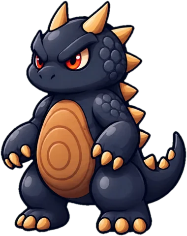

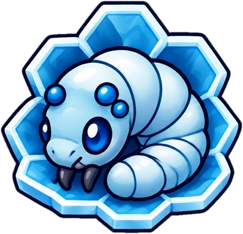


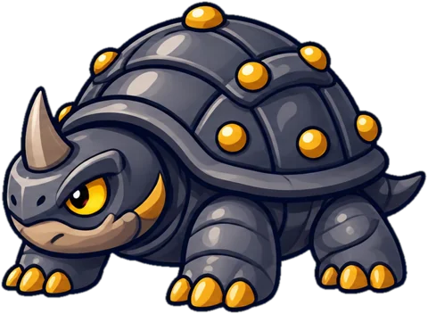

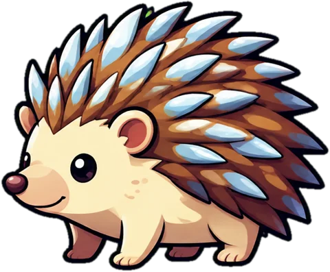
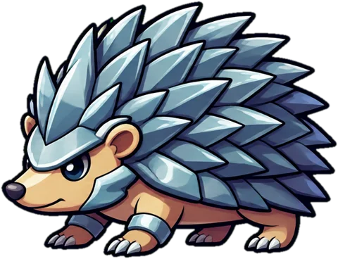
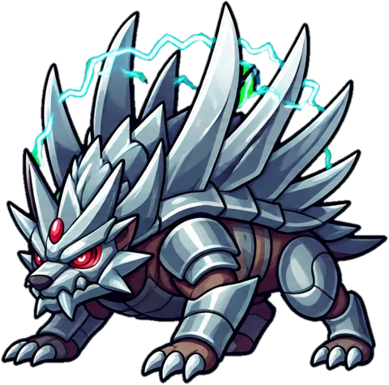


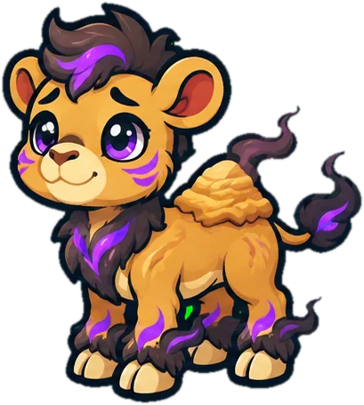
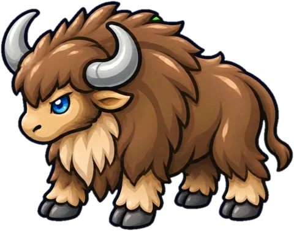
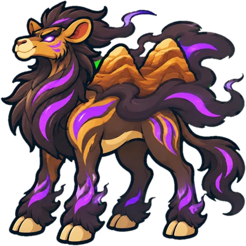


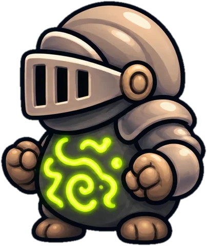

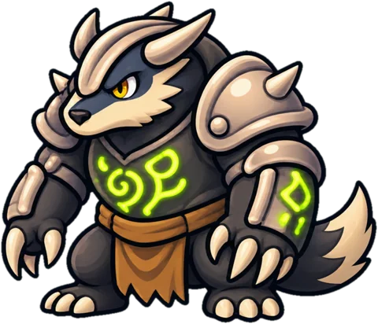


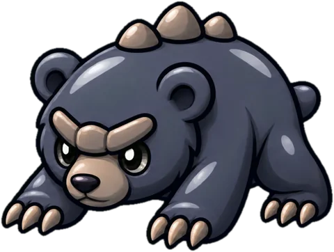
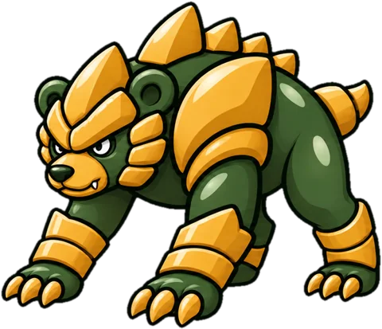


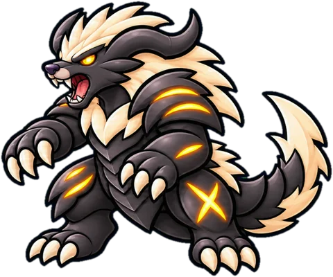


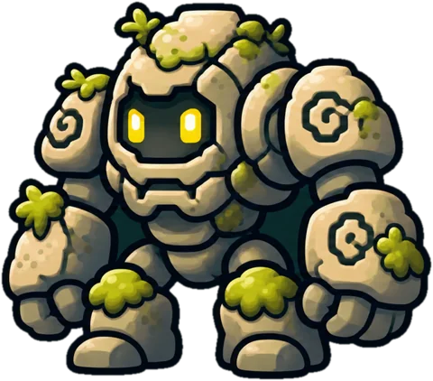
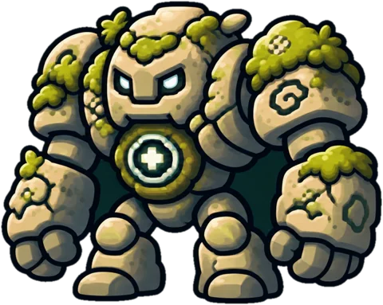


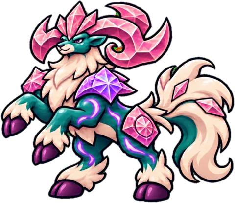


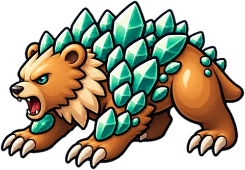

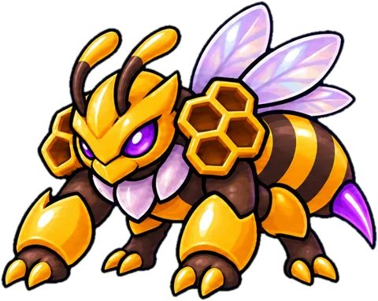
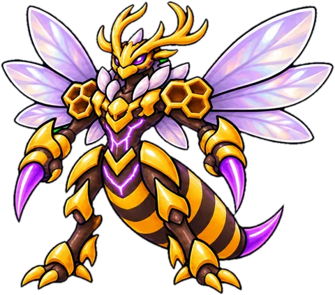

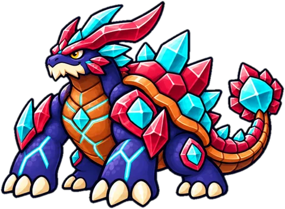


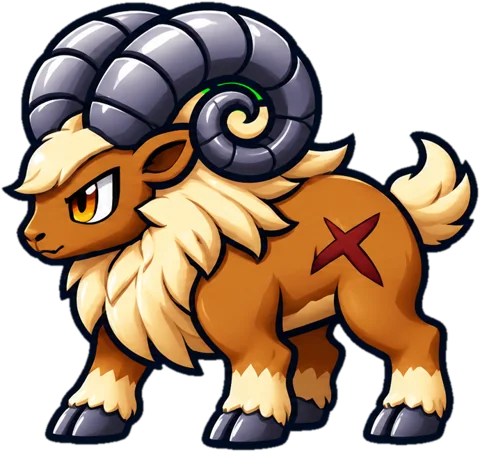


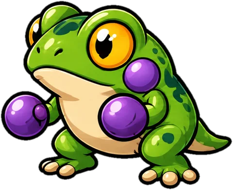
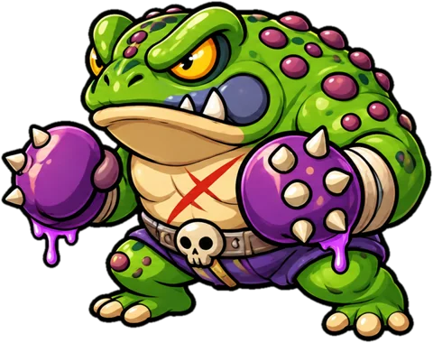

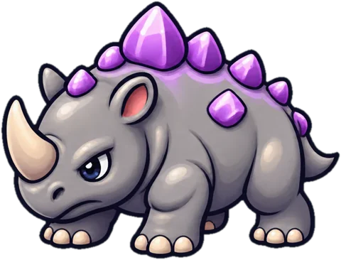
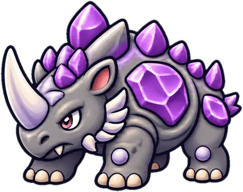

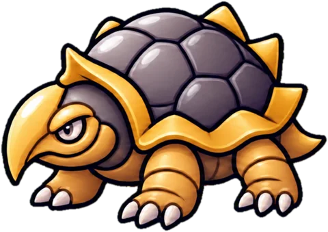
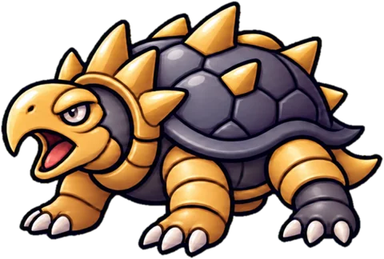

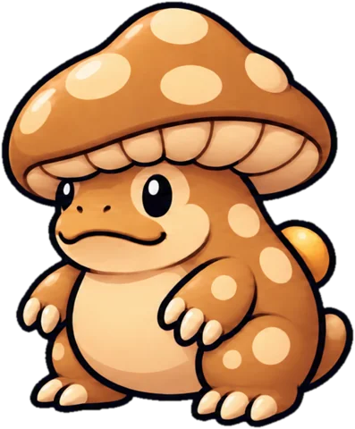


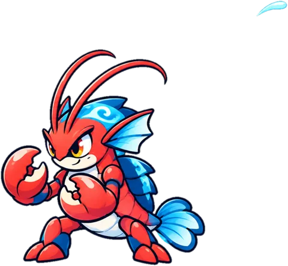


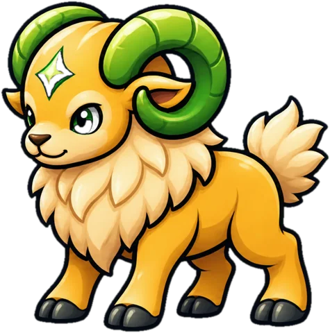
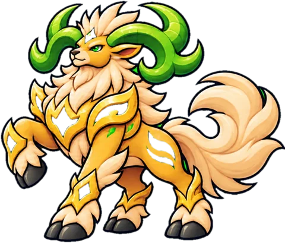
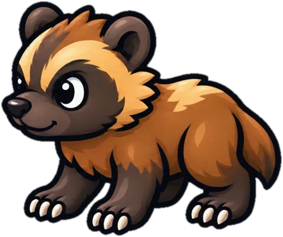


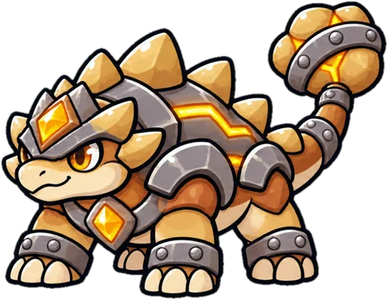
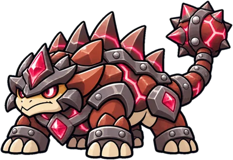

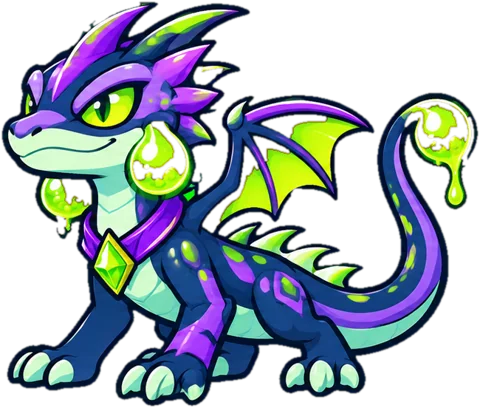


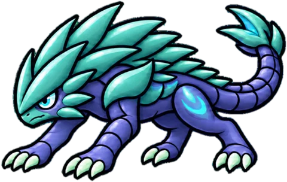

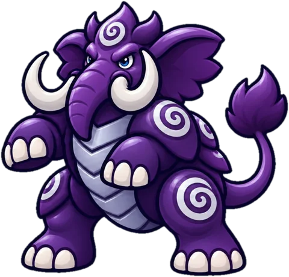
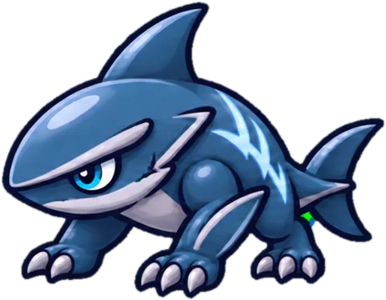


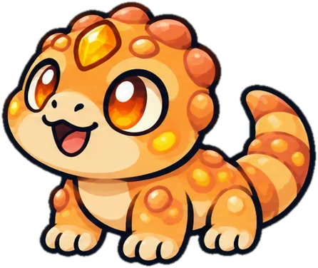


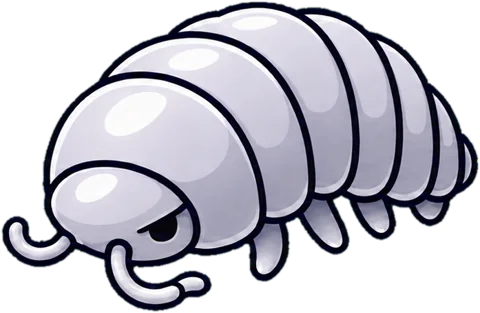
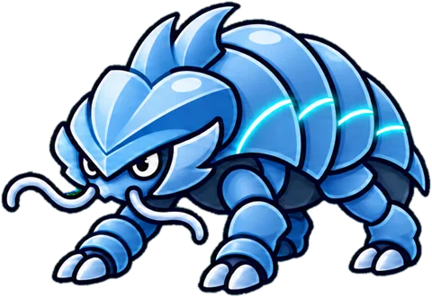
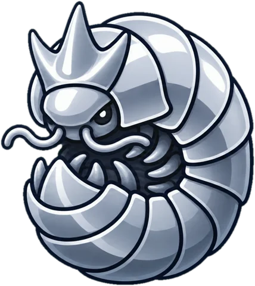
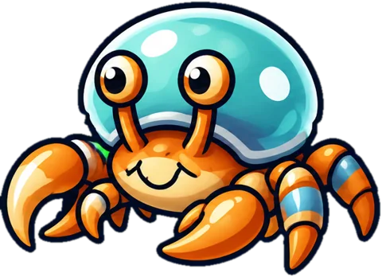


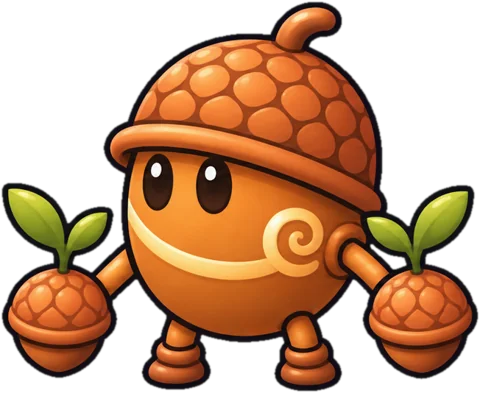


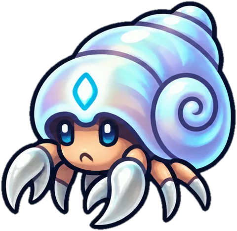
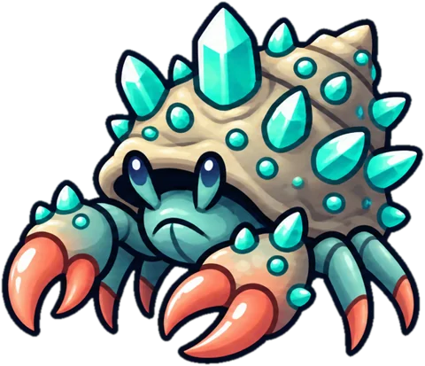
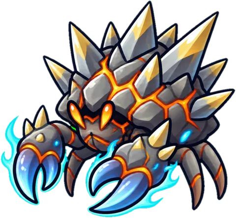

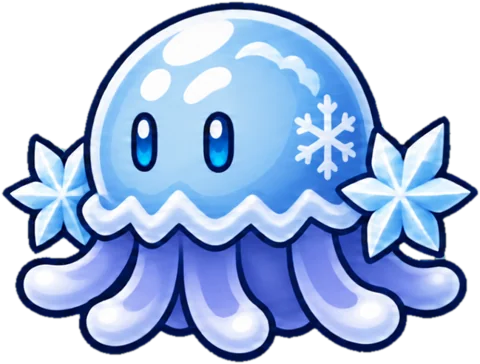
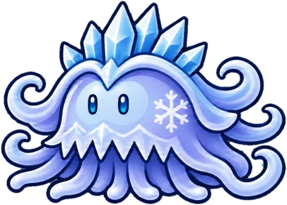